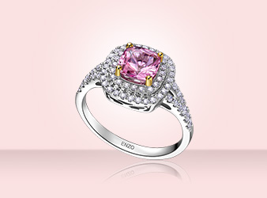

认识珠宝
Jewelry Information
彩色宝石是什么？
一定要符合以下三点才能称为天然彩色宝石
红碧玺
名称 红色电气石,红碧玺,Rubellite
家族 碧玺家族
颜色 红碧玺具有像红宝石一样的颜色，并含有一些生长纹，是宝石中贵价的一类。红色碧玺
有许多不同色彩浓度，从极微浅的粉红贝壳色至深粉红色到红宝石的红色，通常带紫。
特性 一般而言，由於天然产出的原因，红碧玺的生长纹相对较多，并广为市场所接受。晶体
内部纹理(生长纹)雾气丶越少越难求，天然纹理- 正好引证天然碧玺特性( 需引导顾客
完美无暇实属难求)。其中“中国红” - 色泽接近红宝石，价值亦相对较贵
产地 巴西佳产出地，非洲有出产
寓意 有智慧，聪明和带来喜气的寓意

粉红碧玺
名称 粉红碧玺，Pink Tourmaline
家族 碧玺家族
颜色 微浅的粉红贝壳色
特性 一般而言，由於天然产出的原因，红碧玺的生长纹相对较多，并广为市场所接受，价值
较玫瑰红及紫红色为低。拥有天然能量，能激发创意及灵感，并具有镇静丶净化及集中
力量的作用。具天然美容能量，对新阵代谢及内分泌线体活动产生高度作用，平行内部
气场。当粉红碧玺石跟皮肤接触後，能释放远红外线波长，使肌肤产生红润，促进血液
循环
产地 巴西，非洲
寓意 有智慧，聪明和带来喜气的寓意
绿碧玺
名称 绿碧玺，Green Tourmaline. 又名绿色电气石和“ 巴西祖母绿”
家族 碧玺家族
颜色 绿色碧玺的色泽范围很广，由淡绿至墨绿，深绿
特性 常见形为三方柱、菱面体和六方柱等。因天然含许多细长而不规则的丝状生长纹，所
以通常切割为祖母绿形及梨型(Emerald Cut & Pear shaped) ，最能显现它美丽的颜色
产地 巴西
寓意 有招来财富的功效，让人心情快乐，和气生财，身体健康。于送礼文化上最具意义，受
女士及男士喜爱
西瓜碧玺
名称 西瓜碧玺，Watermelon Tourmaline
家族 碧玺家族
颜色 西瓜碧玺具有绿色和红色两种颜色。一种情况是绿色在外围，红色在中心，就像西瓜，
因而称为“西瓜碧玺”。还有一种是一半绿色一半红色的西瓜碧玺
特性 市场上称为西瓜碧玺 (Watermelon Tourmaline)在宝石学名为双色碧玺 (Bi-colored
Tourmaline),非常稀有,并且100%是天然形成的颜色。由于西瓜碧玺中包裹体丰富，不
能经过任何人工加热等处理（否则西瓜碧玺会破裂），因此产出干净透明，颜色鲜艳者
非常稀少。加上西瓜碧玺产量本就稀少，近年不断的开采，使价格持续攀升
产地 巴西
寓意 纯洁，干净透明的心灵
帕拉依巴碧玺
名称 碧玺之王-帕拉伊巴碧玺，Paraiba Tourmaline，以15年前发现地巴西Paraiba(帕拉依
巴)地区命名
家族 碧玺家族
颜色 主要为绿色与蓝色，绿色品种深至近祖母绿色，但更为稀有的是蓝色品种，常呈莹光蓝
色。其蓝色来源于宝石含有铜元素，与大部分含有铁元素的天然宝石不同
特性 产量稀有，有神奇的色泽，闪烁通透，不含天然瑕疵，独具荧光效果，是碧玺系列中最
高贵的品种，比天然钻石还珍贵。
产地 非洲莫桑比克
寓意 高贵，气质的象征
海蓝宝石
名称 海蓝宝石 Aquamarine
家族 绿柱石家族
颜色 呈天蓝色或海水蓝色， 源于拉丁语 “海水”的意思，由其像海水的颜色而得名
特性 玻璃光泽，六方柱状晶形肉眼干净至轻微絮状内含
产地 巴西、中国新疆
寓意 三月的生辰石，爱与忠诚，有幸福和永葆青春的标志
桃色绿柱石
名称 桃色绿柱石Morganite. 又名摩根石，取其名於美国一位著名宝石爱好收藏家亦是银行家
的名—J•P•Morgan
家族 绿柱石家族
颜色 以粉红色色调為主，从淡紫色到甚至带橘色光彩的紫色。其粉红色来源于宝石含有锰元
素
特性 比重和折射率都高于普通的绿柱石，因含有铯和铷元素。内部干净透明。产量稀少颜色
独特的桃色绿柱石令它的价格可在巴西祖母绿之上
产地 巴西
寓意 珍贵，无杂质的爱情
铬透辉石
名称 铬透辉石Chrome Diopside. 又名哭泣石，因為医疗学者认为其具有催人泪下的功能，
从而达到治疗精神创伤的效果
家族 绿柱石家族
颜色 浓郁的森林绿色。其翠绿色来源于宝石含有铬元素
素
特性 虽然铬透辉石知名度不高，但越来越多被用于珠宝首饰镶嵌，尤其是耳钉、吊坠、胸针
的镶嵌。而且晶莹剔透的铬透辉石，更被人赞誉为祖母绿的姊妹石，在俄罗斯還有西伯
利亚祖母绿称號
产地 巴西
寓意 有爱情和承诺意思，能给予配戴者创造力、健康、和睦、精神及理财方面的成功。所以
如将透辉石配戴靠胸的地方，對心、肺及循环系统有益。另外透辉石也常被收藏在家
中，调和家里风水、自己的心灵、也能招进财源和舒解压力
@成都东软学院 753382249@qq.com